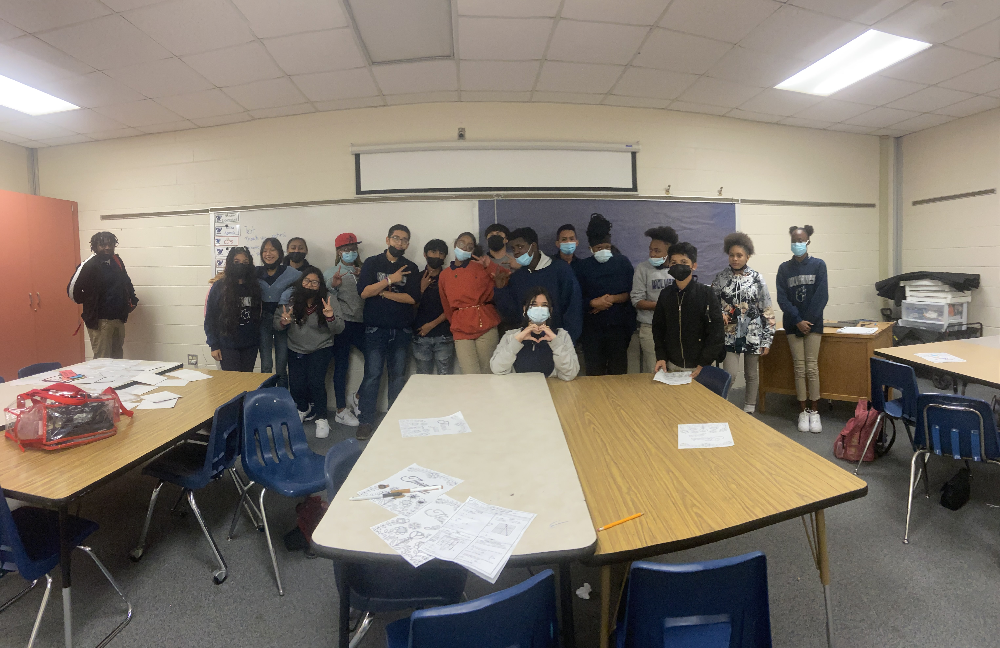
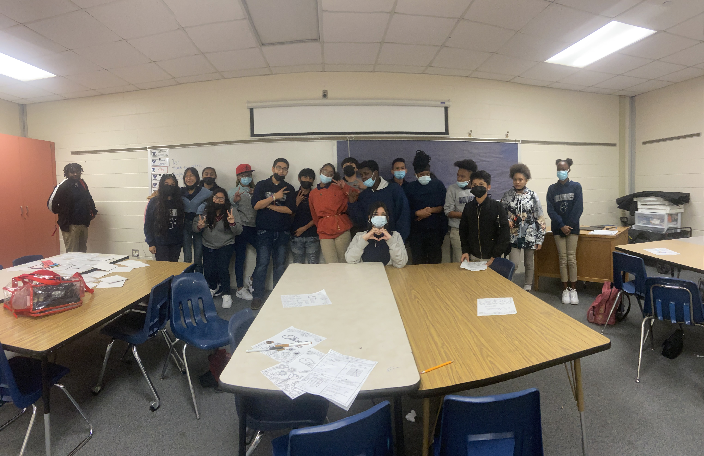

Tech Interviews with Sorting Algorithms Workshop
Presentation: https://codebar-shanghai.github.io/Tech_Interviews_Sorting_Algorithms/Repo: https://github.com/codebar-shanghai/intro-websecurity-workshop.git
About Me
- Aspiring Full Stack Developer
- Focused on web technologies
- Passionate about empowering women in tech
- B.S. Degree in Teaching and Learning
- Work Experience in Middle School Education (Age 11 - 13)
- Fun fact: My 4-year-old daughter is the youngest CodeBar member!
 

Overview
- Introduction (5 min)
- Tech Interviews Presentation (30 min)
- Intro to Workshop (40 min)
- Q&A (15 min)
- Break (10 min)
- Workshop with Q&A (75 min)
- Closing Remarks (5 min)
Takeaways
- Learn how to prepare for tech interviews at various levels
- Gain experience with Bubble, Merge, or RSA algorithms during the workshop
The Problem with Interviews
Interviews can be unpredictable. This workshop aims to demystify the tech interview process.
Expectations Based on Level
I interviewed hiring managers about what they look for in candidates:
- All Levels: Publicly showcase your work.
- Junior: Highlight soft skills.
- Mid-Level: Demonstrate growth and adaptability.
- Senior: Show deep knowledge and thought leadership.
Interview Insights
Eddie
- Use standard language libraries in interviews.
- Start with a docstring to define inputs and outputs before coding.
- Follow a "top-down" programming approach.
- Develop fluency in idiomatic programming (e.g., by following Python’s design principles and style; refer to bubble sort and merge sort exercises).
- Solve problems first, then use AI to refine and learn.
Interview Insights
Anonymous
- Deep understanding of work processes.
- Strong problem-solving skills.
- Self-learning and independence.
- Knowledge of real-time programming and concurrency.
Interview Insights
Prof. Nath at the University of Colorado Boulder
- Focus on adaptability over what you've learned.
- Strong fundamentals and problem-solving are key.
- Be honest if you don't know something.
- In academia, pedagogy and teaching skills matter.
Interview Insights
David
- Strong communication skills.
- Experience with success and failure.
- Commitment to self-learning.
- Alignment with current coding practices.
- Deep understanding of key language features.
- Deliver projects publicly—learn in public.
- A degree is not required.
Learn in Public Using Blogs
- Kedasha Kerr: From Social Worker to Software Engineer at Microsoft: itsthatlady.dev
- Dan Abramov: Creator of Redux, shares insights on React and JavaScript: overreacted.io
- Lauren Collins: Markdown files documenting learning on GitHub Pages: laurencollins.dev
Best Places to Find a Job
- Coding communities
- User groups (Tech, Agile, etc.)
- Conferences
- Open source projects
What Does "Computer Science Knowledge" Mean?
Do I need a computer science degree? No!
University of Colorado advisor highlighted these courses as key to landing a job in the tech industry.
- Intro to Programming
- Algorithms
- Data Structures
- Data or Information Visualization
- Software Development Methodologies
Pair Programming
- Driver: Writes the code
- Navigator: Guides the driver
- Switch roles every 20-30 minutes
- Discuss and explain your thought process
- Use feedback to improve
A common interview technique, especially for junior developers. It assesses collaboration and problem-solving in real-time.
You are encouraged to pair code during the workshop while completing the activities today.
Pair Programming
- Driver: Writes the code
- Navigator: Guides the driver
- Switch roles every 20-30 minutes
- Discuss and explain your thought process
- Use feedback to improve
A common interview technique, especially for junior developers. It assesses collaboration and problem-solving in real-time.
Study Tips Using AI
- Do NOT: copy and paste code you should understand (Ex: algorithms & data structures)
- Do: Use AI to quiz yourself on topics.
- Do: Create a study plan with AI (e.g., "Learn Python in 5 hours").
- Do: Understand the topics deeply to discuss them confidently in an interview.
- Do: Spend a block of your time using active recall to write and rewrite code from memory generated by AI.
- Ask AI: "What do I need to memorize, and what do I need to know well about X, Y, Z?" to help you study effectively.
- Tell AI to organize the information into a table or create Cornell notes for you to study from.
- Then ask AI: "Quiz me on X, Y, Z."
History of Top-Down Programming and Interviews
- Inventor:Harlan Mills and Niklaus Wirth
- Year: 1970
- Relevance: Top-down programming helps interviewers assess structured thinking by breaking complex problems into smaller parts.
Top-Down Programming
- Start with the Big Picture: Define the overall problem or goal.
- Break Down Into Smaller Sub-Problems: Divide the task into smaller, more manageable parts.
- Work on High-Level Functions First: Create the main function that outlines the solution.
- Develop Sub-Functions: Implement helper functions to support the main function.
- Refine Each Function: Focus on implementing the details of each function.
- Test Each Part and the Whole: Ensure all components work together seamlessly.
Q&A
Feel free to ask any questions!
Activity Options
Choose one of the following activities. To get started, break into small groups of two or more:
- Activity 1: Learn Bubble Sort – New coders working alone
- Activity 2: Learn Merge Sort – Hobby coders working alone
- Activity 3: Learn RSA – Professional developers
Setup GitHub CodeSpace
https://github.com/codebar-shanghai/Tech_Interviews_Sorting_Algorithms_activities.git
- Work in groups of 2 or more
- Fork the Repository
- Open the Forked Repository in CodeSpace:
Break (10 min)
Feel free to get up, take a break
Fun Facts:
The technologies used to build this presentation are...
- Prettier Formatter to make code easy to read
- Reveal.js for presentation slides
- ChatGPT & HuggingFace.co/chat to speed up workflow
- Graphviz for diagramming in Python
Workshop (85 min)
In pairs, choose and code an algorithm such as Merge Sort or the RSA Algorithm.
Apply what you've learned from Pair Programming, and top-down programming. Focus on clear communication and collaboration as you work through the coding tasks together.
Other Resources
- Identify your technical skill level: https://github.com/Semalab/developer-skills-matrix.git
- Algorithms Visualization: https://visualgo.net/en/sorting
- Geek for Geeks - Algorithm & Data Structures Study Tool: https://www.geeksforgeeks.org/
Thank You!
Special thanks to our sponsors, everyone who contributed, and all participants!